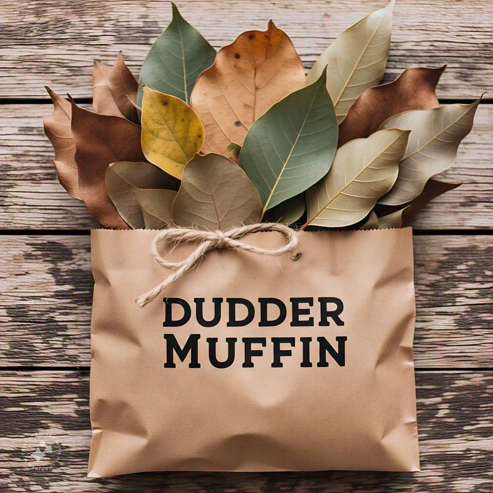

Nossos Produtos

Papel para Escritório
Papel de alta qualidade para impressões e documentos.

Papel Escolar
Coloridos e texturizados para todos os trabalhos escolares.

Papel Artesanal
Feito à mão, perfeito para projetos criativos.